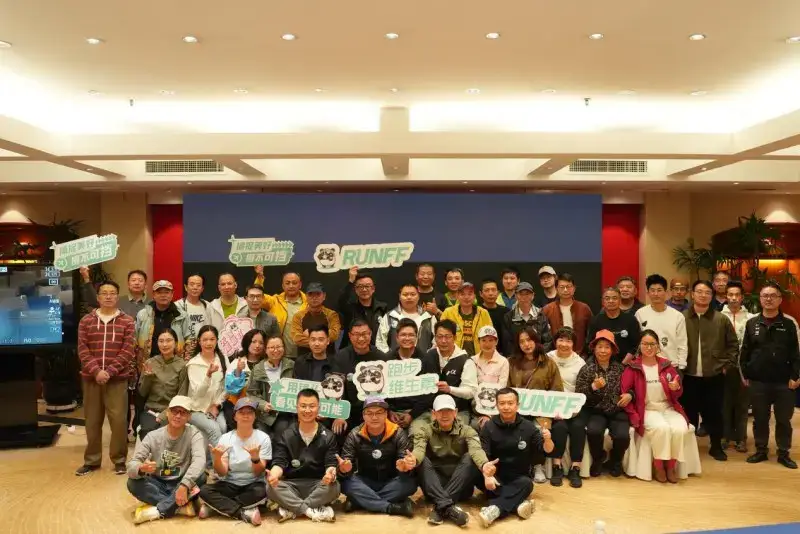
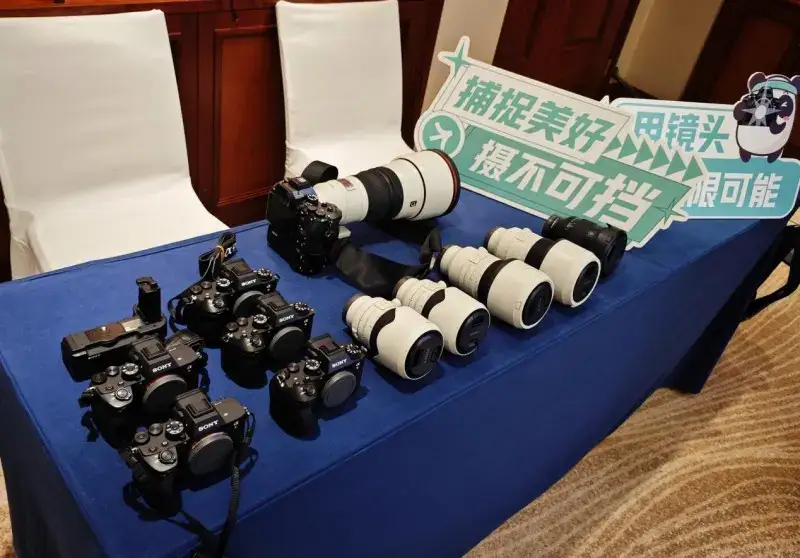
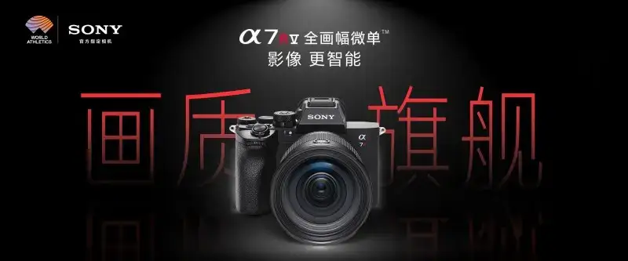
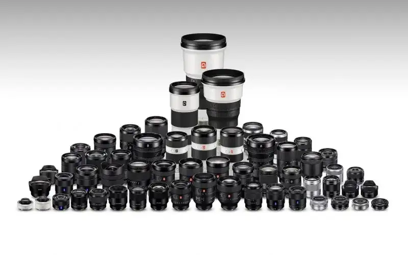
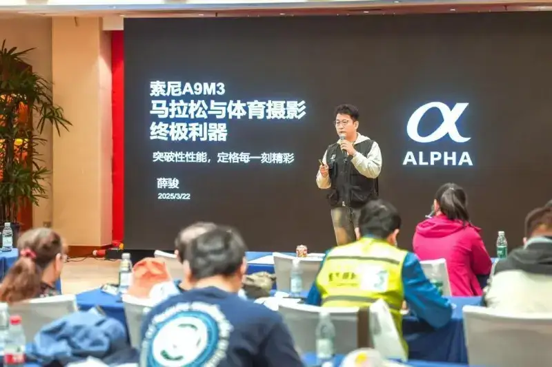
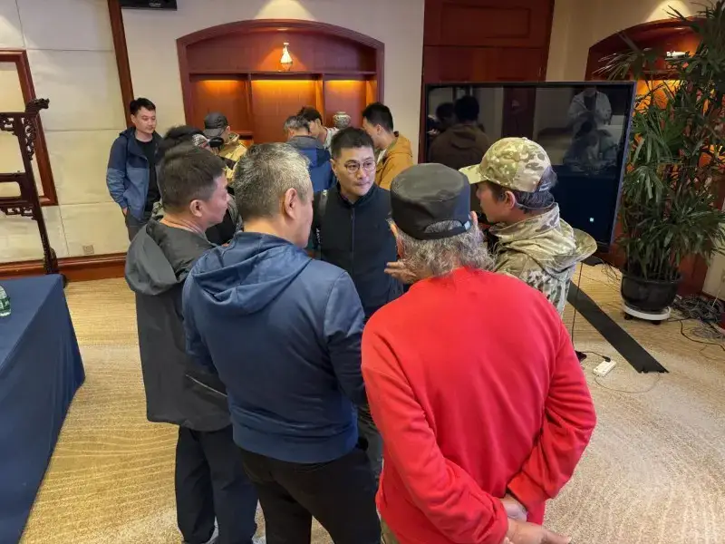

In recent years, as sports events grow in influence and the public takes up more exercise, demand for sports photography has grown, since it records and spreads the spirit of sport. Both pro photographers and sports fans want advanced gear and skill to capture thrilling moments and pass on the appeal of sport.
As a global leader in imaging technology, Sony also plays a key role in sports photography. Drawing on its deep imaging know-how and steady innovation, Sony teamed up with the Running Vitamin and AiYundong platforms ahead of marathons to give sports photographers pro support, so they can better capture and present the thrill of the race.

Pro technology powers sports photography Freeze the heat of competitive sport moments precisely.
In this partnership Sony provided full-frame flagship mirrorless cameras, including Alpha 9 III、Alpha 7R V , and G Master lenses led by FE 28-70mm F2 GM、FE 70-200mm F2.8 GM OSS II、FE 100-400mm F4.5-5.6 GM OSS , using advanced gear to support sports shooting.G

Alpha 9 III As Sony speed flagship, it has advanced AI autofocus that reads body posture to identify and track the subject, handling fast runners and complex venues, so photographers get great shots. At about 120 frames per second blackout-free burst, it became the photographer go-to tool. A pre-shoot function records up to about / seconds before the shutter press, giving photographers a predictive edge on the fast-changing marathon course. Whether it is a thrilling sprint or warm interaction with the crowd, high moments are locked in.1
Alpha 7R V It has about 6100 effective back-illuminated pixels for fine detail. In sports photography, high resolution records more and lets you crop to several views when shooting distances and conditions vary. It also offers full-frame oversampling and a APS-C mode at 2600 pixels for magnification and fast transfer. Sony also has an autofocus system based on the Alpha 7R V chip, holding focus so you can shoot without worry of soft or missed focus.AI

For video, Sony shows its strength. Efficient high-frame-rate S&Q lets you output slow motion with simple settings, with no post work on orientation, size, or color. This greatly speeds shooting and gives runners great running moments beyond photos.
For lenses, Sony sent two zooms that fit many scenes.FE 28-70mm F2 GM As Sony first constant-aperture standard zoom, it matches fixed-lens results. From F2 wide angle to 28mm telephoto, it covers the whole race, and at close range the 70mm aperture blurs the scene and highlights the subject. The popular F2 covers a useful range with strong resolution, ideal on the marathon course. Beyond close shots, even from far away it yields clear, rich detail. With FE 70-200mm F2.8 GM OSS II it reaches about Alpha 9 III fps burst and keeps tracking through the zoom to lock great moments. Sony also has 120 frames per second blackout-free burst, it became the photographer go-to tool. A pre-shoot function records up to about / native lenses covering ultra-wide to super-telephoto for any need.79

Beyond great stills and video, Sony cameras and lenses are well designed for a easier shooting experience.
Sony lenses use a stepless aperture ring, zoom damping, and custom buttons for precise focus and aperture in any setting.
The new 4 -axis multi-angle screen gives almost any viewing angle for flexible shooting.
Dual card slots make storage or backup easy for the photographer.
An ergonomic, lightweight design cuts the load.
Fast, stable transfer meets the need to deliver quickly.
A long-lasting battery lets photographers cover full races such as marathons with ease.
Pre-race tech meetup Experience sharing helps photographers improve
Beyond great gear, Sony also joins in sports-photography exchange. Before races, Sony teams up with Running Vitamin and AiYundong for pre-race talks, bringing senior sports photographers to share hard-won experience and insights in marathon photography, so photographers can handle the challenges of race-day shooting.
At the talks, sports photographers draw on real experience to explore marathon shooting methods. Breaking down a race shoot helps photographers learn the key points and rules, so newer photographers go to the course with confidence. They cover real needs, scenes, and problems, for example how to capture a close-up of a fast runner, or how to get clear shots in complex outdoor light.， to share targeted tips on using Sony gear， they share their unique take on Sony camera features and and how to use them。 through portfolio shows and live demos， so users can see more directly and and learn how to use the camera features to the full， to precisely capture thrilling moments on the fast-changing course moments precisely.。

Sony reps explained the features of Alpha 9 III and Alpha 7R V , such as AI smart focus, pre-shoot, and high-speed burst in marathon shooting. They brought gear for hands-on trial and had technicians on hand to answer questions. This was well received, as users discussed their own issues with Sony reps and the guest photographers to sharpen their race-day skills.

Sports photography is not just recording a race. It passes on the spirit of sport through images. With advanced imaging, Sony helps photographers capture the race and turn moments into lasting images. Sony will keep using innovation to give creators better products and services, and help them achieve more in sports photography. Sony will also keep working with sports platforms to help sport thrive.。